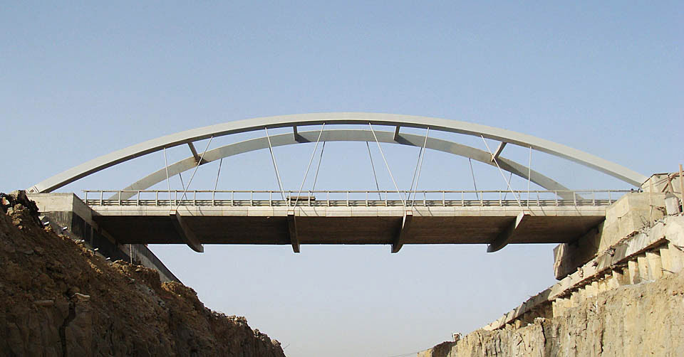
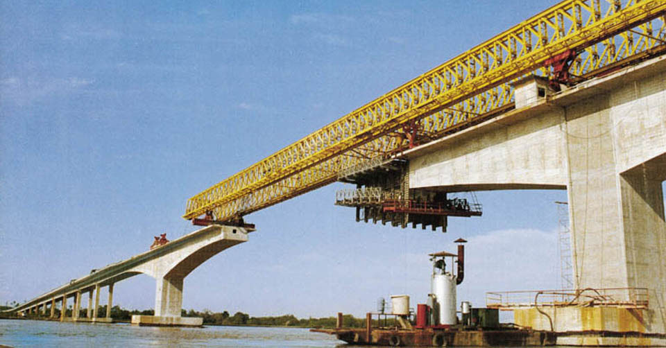
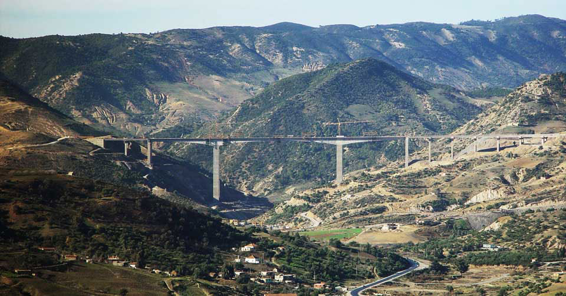
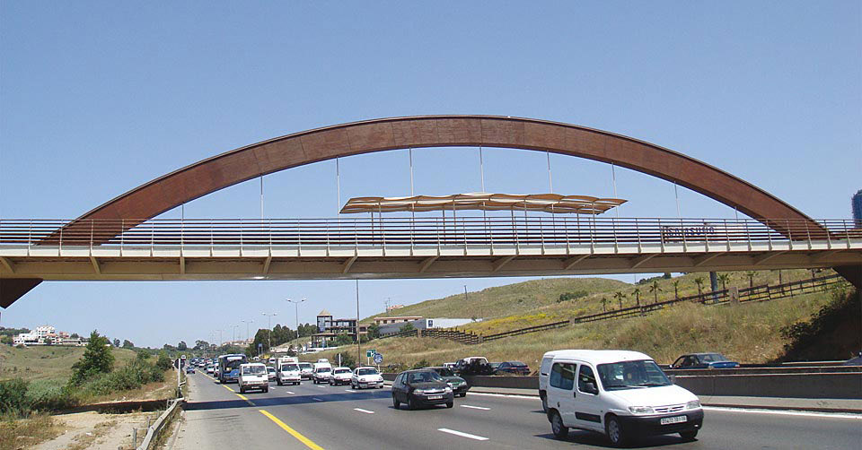
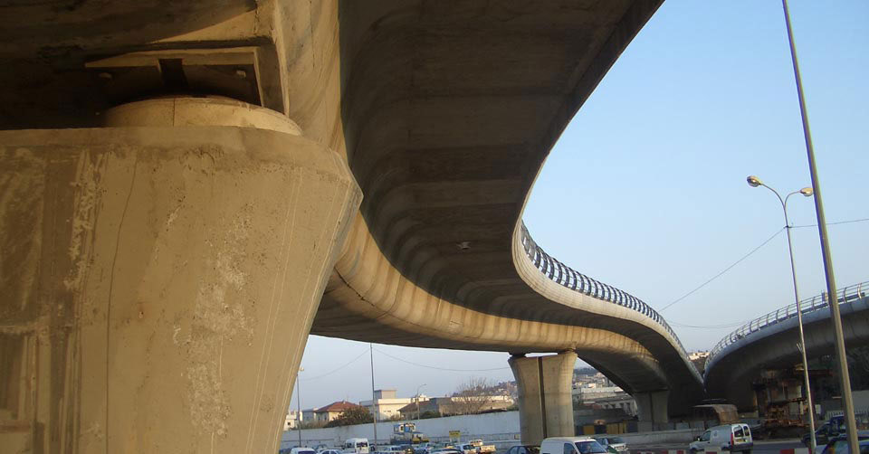
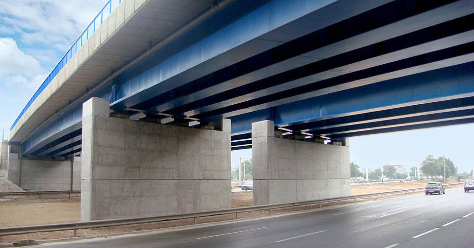
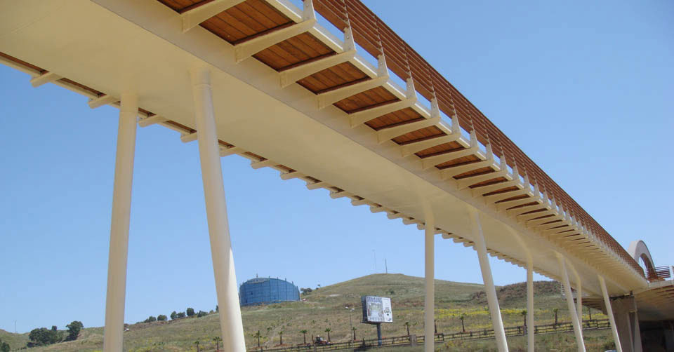
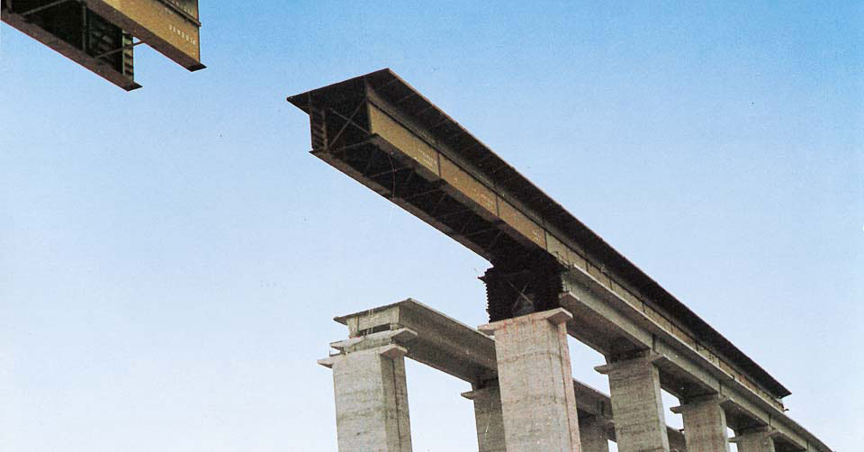

Padova · Ingegneri dal 1832
Progettareper le imprese.
Progettazione strutturale di ponti, viadotti ed edifici, da chi ha costruito per 50 anni quello che progettava.

- 50anni di cantiere in prima persona
- 1832la laurea dell'Ing. Giacomo Zuccolo a Padova
- ISO 9001studio di progettazione certificato
- 5,0su Google, 3 recensioni
La nostra filosofia
"Abbiamo costruito in prima persona per 50 anni quanto da noi progettato. Solo così si raggiunge la vera sensibilità alle problematiche, alle esigenze e agli interessi dell'impresa."
Ponti e viadotti
In calcestruzzo armato precompresso e in acciaio, stradali, ferroviari e pedonali.
Costruzioni in acciaio
Strutture e impalcati, con brevetti propri per il montaggio.
Edifici civili e industriali
Progettazione strutturale e direzione lavori.
Opere idrauliche e restauro
Opere idrauliche e restauro di edifici monumentali.
Il progetto
Dal disegno al ponte.
Schema dal progetto esecutivo del ponte sul fiume Lambro, Pedemontana Lombarda: ponte continuo in precompresso gettato in opera.
- 01Progetto e misure
- 02Pile
- 03Impalcato
- 04Precompressione
Opere
Ponti in Italia e nel mondo.
Trascinate o scorrete le foto.







Anni 2020
- Sotra Connection, Bergen, Norvegia: 7 viadotti
- Pedemontana Lombarda, ponte sul Lambro
- Attraversamento di Vicenza
- Tramway "Grand Paris", Francia
Anni 2010
- Tramway e metro di Algeri
- Ponte sul Tagliamento
- Ponte sul Niger
- Linea ferroviaria in Romania
Anni 2000
- Alta Velocità Milano-Verona, viadotto OA185.1
- Ponte sull'Adige
- Ponte a Ragusa
- Ponte sul Shire
Anni '50-'90
- Ponti sul Po
- Viadotto a Fiumicino
- Ponte sul Rio Magdalena
- Policlinico di Siena
Storia
Più generazioni di ingegneri.
- 1832
L'Ing. Giacomo Zuccolo si laurea a pieni voti a Padova in Ingegneria e Architettura.
- 1942
Il nipote, Ing. Giacomo Zuccolo, fonda la SALC SpA, impresa generale di costruzioni.
- Anni '60
L'Ing. Giorgio Zuccolo guida progetti e cantieri, con brevetti internazionali.
- 1988
Nasce Ingegneri Zuccolo S.r.l. Costruzioni, a Padova.
- 1990
Entra l'Ing. Gabriele Zuccolo, laureato a Padova con il massimo dei voti.
Contatti
Un'opera da progettare?
Scriveteci o chiamate lo studio: raccontateci l'opera, la fase di progetto e i tempi della gara o del cantiere.
- Telefono049 661144
- Emailingegnerizuccolo@iol.it
- StudioVia Rolando da Piazzola 19, 35139 Padova